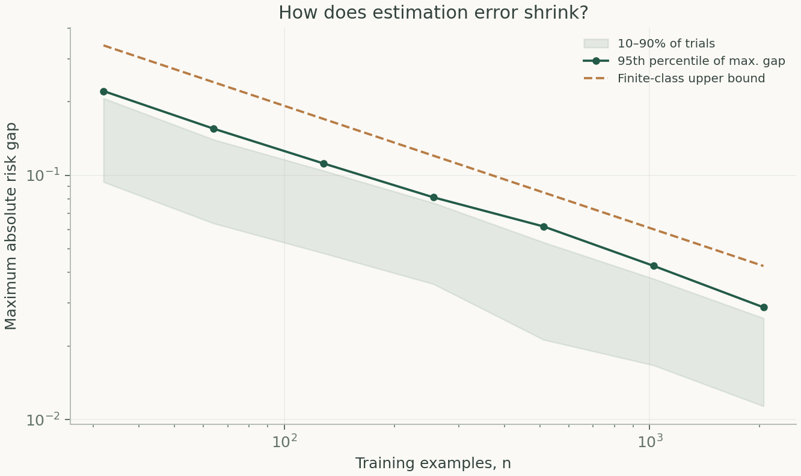

Learning theory
How much data is enough? Generalization, concentration, and the assumptions behind statistical guarantees.
Hello, I'm
ML theory × Information engineering
Exploring how we learn, how we optimize,
and how information survives uncertainty.
This demonstration brings together reproducible examples in statistical learning, convex optimization, and information theory. Each project starts with a specific question, makes its assumptions explicit, and includes code you can run.
Kwame Mensah is a fictional profile in this design. The repositories below are educational examples. No affiliation, degree, or publication is claimed.
From the limits of learning
to the limits of communication.
How much data is enough? Generalization, concentration, and the assumptions behind statistical guarantees.
How do algorithms reach a solution? Convexity, convergence rates, and the effect of acceleration.
What can a noisy signal preserve? Entropy, channel capacity, and simple error-correcting codes.

A finite hypothesis class, a known data distribution, and a direct comparison between empirical risk and a uniform-convergence bound.
Explore example
Gradient descent and Nesterov acceleration on the same quadratic, with known curvature and an exact reference solution.
Explore example
Explore binary entropy, channel capacity, and the reliability of a simple repetition code through analytical curves and simulation.
Explore exampleAll figures are generated by the included experiments. Source archives contain Python code, tests, data, and an MIT license.
View public repositories on GitHubMove the slider to explore a binary symmetric channel. Its capacity is C = 1 − h₂(p) bits per channel use.
Read the assumptionsMemoryless channel · Independent bit flips
Short explanations, with the details left in.
From Nowhere to Anywhere.
Start with an experiment